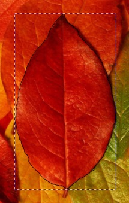
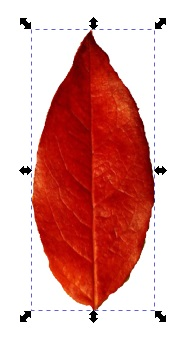
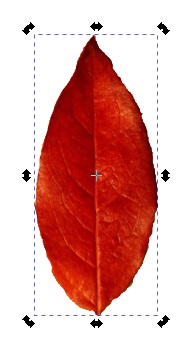
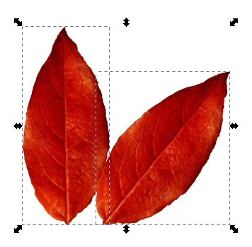
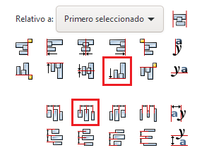
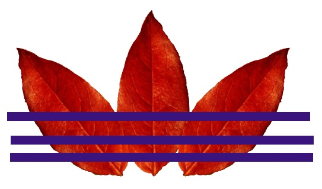
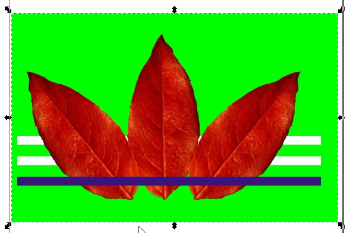
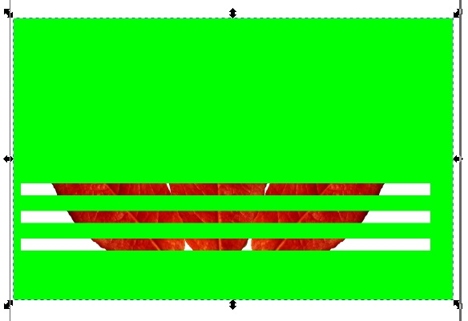

9. Logotipo Adidas¶
{kind=link}
Abrimos un nuevo documento con Inkscape.
Copiamos la imagen de más abajo en Inkscape para que nos sirva de modelo.
Con la herramienta de dibujar líneas a mano alzada || vamos a trazar el contorno de la hoja central.
El trazo se puede realizar en varias veces. Solo hay que pinchar en el cuadradito final del trazo anterior para poder continuar.

Una vez terminados todos los trazos en el punto inicial, la hoja estará enmarcada en el dibujo realizado.
Ahora seleccionamos los dos objetos (la imagen de las hojas y el trazo alrededor de la hoja) y escogemos la herramienta
Objeto... Recorte... Aplicar. La hoja se habrá recortado de la imagen.Para continuar, seleccionamos la hoja y la estrechamos en horizontal para que sea más esbelta.
Duplicamos la hoja con Control+D o el menú
Edición... DuplicarPinchamos dos veces sobre la hoja hasta que aparezcan los tiradores de rotación.
Y giramos la hoja unos 45 grados hacia la derecha.
Ahora podemos seleccionar las dos hojas y alinear los bordes inferiores.
Continuamos duplicando la hoja girada y realizamos un reflejo horizontal
Objeto... Reflejo horizontal. Movemos la hoja al lado izquierdo aproximadamente en su sitio.Para colocar las hojas con más exactitud, seleccionamos las tres hojas y con la herramienta del menú
Objeto... Alinear y distribuirAlineamos los bordes inferiores y distribuimos los centros horizontalmente a distancias iguales.La imagen se verá perfectamente simétrica.
Para continuar, dibujaremos un rectángulo horizontal sobre las hojas y lo duplicamos dos veces más con Control+D.
Seleccionamos los tres rectángulos y con la herramienta del menú
Objeto... Alinear y distribuirnos aseguramos de que estén centrados y distribuidos a distancias iguales.
Ahora dibujamos un rectángulo verde que ocupe el área de las tres hojas y lo enviamos al fondo con el menú
Objeto... Bajar al fondoporque la operación diferencia realiza agujeros en el objeto más al fondo.Seleccionando el rectángulo verde y cada uno de los rectángulos morados elegimos la herramienta
Trayecto... Diferenciapara que al rectángulo verde se le resten las frajas horizontales.Una vez terminadas las franjas horizontales, llevamos el rectángulo al frente con el menú
Objeto... Traer al frenteAhora seleccionamos todos los elementos del dibujo y realizamos la operación
Objeto... Recorte... Aplicar.Como se puede ver, solo ha quedado la parte de la imagen que tenía color sólido y se han eliminado las partes de la imagen que no existían en el rectángulo.
Para terminar añadimos el texto 'The new Fall Collection' con letra Candara, Espacio entre letras 0 y Espacio entre palabras 0.
Con la herramienta de selección
 dimensionamos el
texto y le centramos debajo de las hojas.
dimensionamos el
texto y le centramos debajo de las hojas.Podemos tomar el color de relleno con la herramienta Seleccionar colores de la imagen, desde algún punto rojo de las hojas.
Y el logotipo estará terminado.
{kind=link}